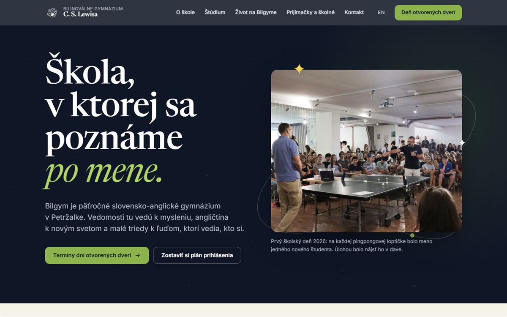

Bilingválne gymnázium C. S. Lewisa (otvorí sa na novej karte)
Nový web pre slovensko-anglické gymnázium v Petržalke. Rodičom a uchádzačom ukazuje život v škole a krok po kroku ich prevedie prihlásením.
- Nástroje
- HTML, CSS, JavaScript
- Ukazuje
- dve jazykové verzie, plán prihlásenia, mobil